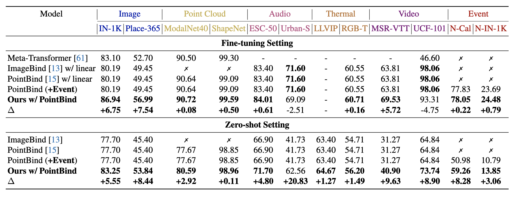
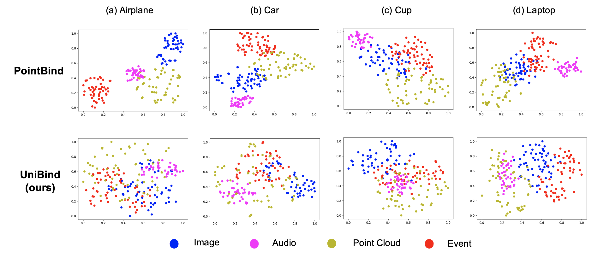
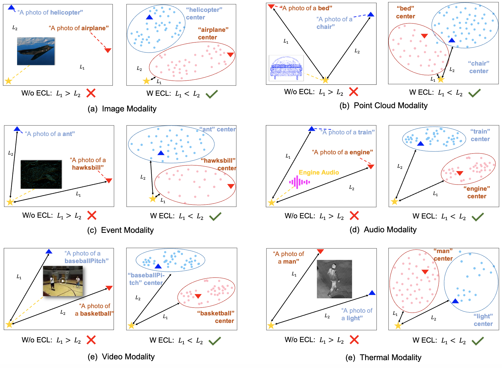

Centering the Value of Every Modality: Towards Efficient and Resilient Modality-agnostic Semantic Segmentation
ECCV 2024
-

Xu Zheng
AI Thrust, HKUST(GZ)
-

Yuanhuiyi Lyu
AI Thrust, HKUST(GZ)
-

Jiazhou Zhou
AI Thrust, HKUST(GZ)
-

Addison Lin Wang
AI & CMA Thrust, HKUST(GZ)
Dept. of CSE, HKUST

Abstract
Fusing an arbitrary number of modalities is vital for achieving robust multi-modal fusion of semantic segmentation yet remains less explored to date. Recent endeavors regard RGB modality as the center and the others as the auxiliary, yielding an asymmetric architecture with two branches. However, the RGB modality may struggle in certain circumstances, \eg, nighttime, while others, \eg, event data, own their merits; thus, it is imperative for the fusion model to discern robust and fragile modalities, and incorporate the most robust and fragile ones to learn a resilient multi-modal framework. To this end, we propose a novel method, named \textbf{MAGIC}, that can be flexibly paired with various backbones, ranging from compact to high-performance models. Our method comprises two key plug-and-play modules. Firstly, we introduce a multi-modal aggregation module to efficiently process features from multi-modal batches and extract complementary scene information. On top, a unified arbitrary-modal selection module is proposed to utilize the aggregated features as the benchmark to rank the multi-modal features based on the similarity scores. This way, our method can eliminate the dependence on RGB modality and better overcome sensor failures while ensuring the segmentation performance. Under the commonly considered multi-modal setting, our method achieves state-of-the-art performance while reducing the model parameters by \textbf{60\%}. Moreover, our method is superior in the novel modality-agnostic setting, where it outperforms prior arts by a large margin of \textbf{+19.41}\% mIoU.
Overall framework of our MAGIC
Overall framework of our MAGIC framework, incorporates plug-and-play multi-modal aggregation and arbitrary-modal selection modules.

The results of the emergent Zero-shot and Fine-tuning Recognition on six modalities.
The t-SNE visualization of representation space.
The t-SNE visualization of embedding centers.
BibTeX
@article{zheng2024MAGIC,
title={Centering the Value of Every Modality: Towards Efficient and Resilient Modality-agnostic Semantic Segmentation},
author={Zheng, Xu and Lyu, Yuanhuiyi and Zhou, Jiazhou and Wang, Lin},
journal={ECCV},
year={2024}
}